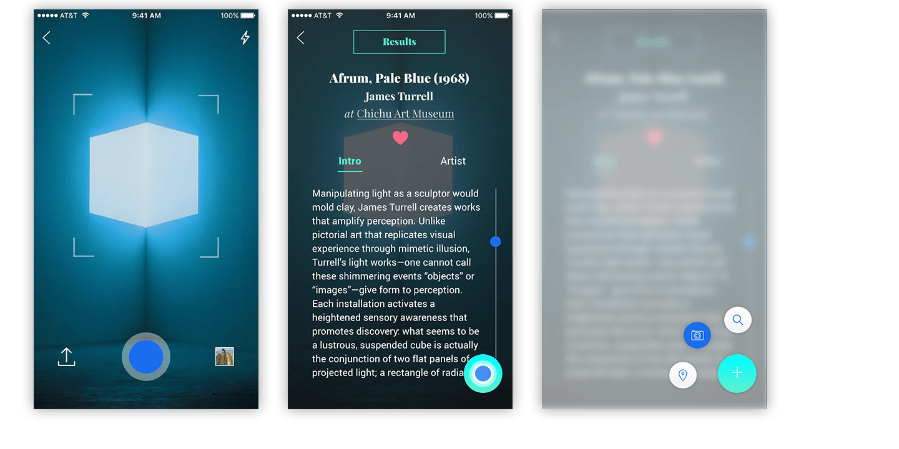

The Naoshima Project
Overview
The Naoshima Project started on my trip to Naoshima, an art island with extensive contemporary art collections in Japan. However, I found it was hard to navigate around the island for foreigners, and there was the lack of detailed information for most of the outdoor art collections. Therefore, this inspired me to design a mobile app for foreigners to access the island easily and also create the brand identity to introduce this beautiful island to more people.
Challenge
Naoshima has gathered global attention as a center of contemporary art island. However, only almost 30,000 tourists now visit this island from Japan and abroad every year. Compare to other countries; Naoshima doesn't have enough impact on tourism. So what the problem is? First, tourists usually can’t get around the island easily due to the comparatively low level of English speaking for most of native Japanese. Lastly, many art and installation collections that are outside the museum have no label or English translation introduction. It is difficult for foreigners to understand the history and process behind the artworks. Lastly, Naoshima doesn’t promote the island’s uniqueness well enough. Low publicity problems need to be solved to increase tourism.
Process
To solve the language barrier for most of the travelers who are here for art and design, I brainstormed and articulated my idea to create a multi-functional mobile app to fulfill users needs. I also wanted to promote the island through well-known artists' artworks like Yayoi Kusama's Yellow Pumpkin to attract more visitors to this art island
Wireframes
After having a better roadmap for my product, I put my thoughts into the wireframes. By visualizing different ideas, I was able to implement initial ideas to better solutions. The design of the menu button was very intuitive and seamless. It stayed on every screens so users can switch functions by just a tap.
User Flow
The user, a foreign traveler in this context, should easily find detailed artwork's information by taking photos of an actual object. Seamlessly switching through the navigation and effortlessly get to the museum’s location without asking others. Lastly, voice assistance allows a traveler to search any art related information. As this can happen in any random order, the app’s flow has to be user-friendly, so there are no gaps between users and the product.
Design
Smart Photo Recognition
Foreigner travelers can easily find detail information by photo capturing actual artworks.

Intuitive Navigation
Seamless navigation experience allows travelers to quickly switching thru the functions.